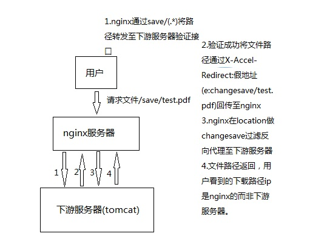

Nginx云端数据加密功能
1. 文件存储在nignx服务器内
在nginx.conf中配置location拦截1
2
3location ~*/(save|tttt){//将数据文件保存路径转发到后台权限验证模块
rewrite ^/(save|tttt)/(.*?) yourServerfile.php?filepath=$1 break;
}
在对应php文件下做权限验证1
2
3
4
5// checkSessionId...
// if success
header("Content-type: application/octet-stream");
header('Content-Disposition: attachment; filename="' . basename($fileName) . '"');
header("X-Accel-Redirect:/".$filePath);
2. 文件存储在nginx下游服务器(跨域)
首先挂上非跨域的解决方案：
nginx 利用 X-Accel-Redirect response header 控制文件下载
nginx的X-Accel-Redirect方案本身 不支持跨域，但Nginx会将下游服务器回传的X-Accel-Redirect文件路径当做地址来经过location过滤处理，同时这一路径是封装在返回报文中无法被fiddler等工具直接抓到的（特殊方式当然可以），也就是说我们可以在nginx中做假地址来反向代理对应文件路径。这个假地址在外部是访问不到的，只通过下游服务器回传。
方便理解，文件传输方案如下:

nginx.conf相关配置1
2
3
4
5
6
7
8
9location ~*changesave/{
rewrite ~*changesave/(.*) $1 break;
proxy_pass http://tomcatserver;
}
location ~*/(save|tttt){
rewrite ~*/(save|tttt)/(.*) /filter.php?filePath=$1 break;
proxy_pass http://tomcatserver;
}
tomcat服务器设定response header1
2
3
4
5if(checkSessionId){
return Response.status(200)
.header("X-Accel-Redirect", location)//location为文件路径
.build();
}
大功告成！
比起链接实时加密对云存储文件数据进行加密的方法，这种方案门槛低多了。
Except：你的假链接地址被泄露。